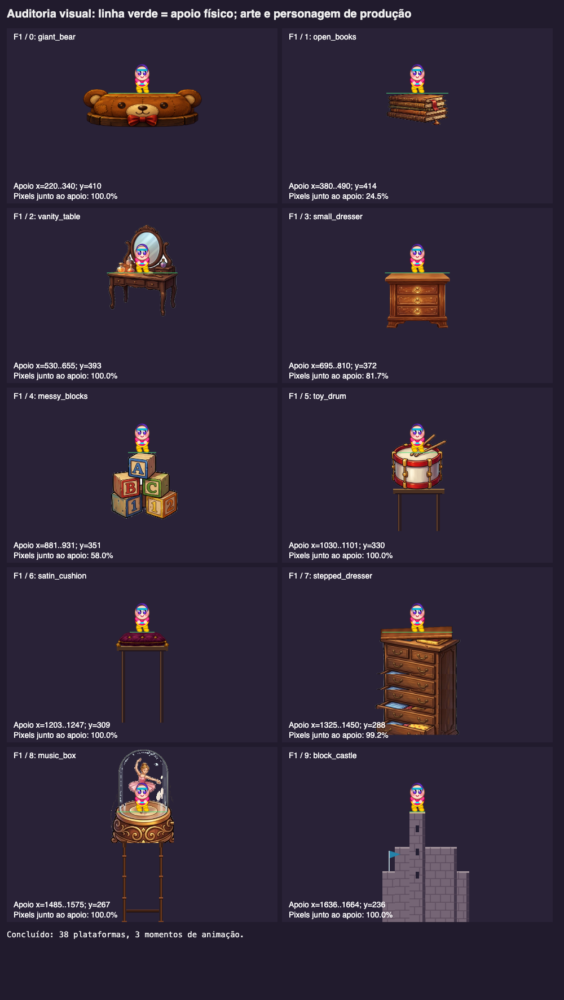
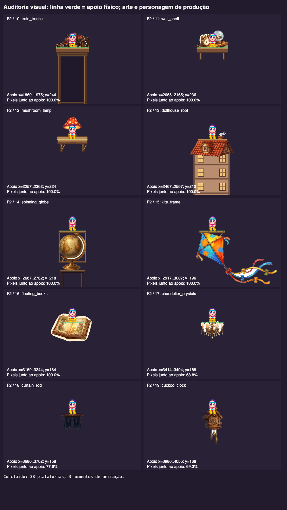
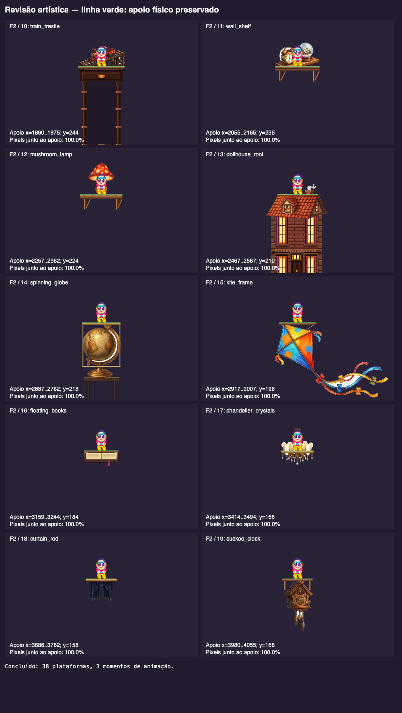
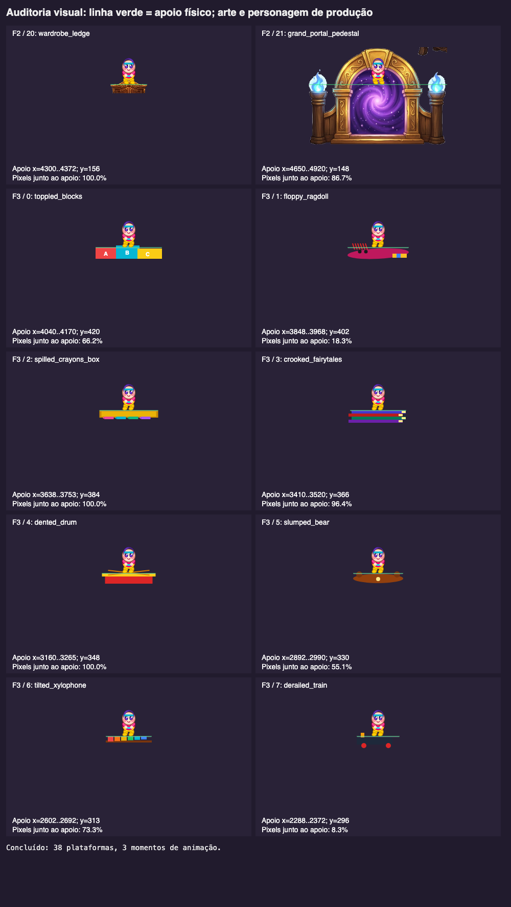
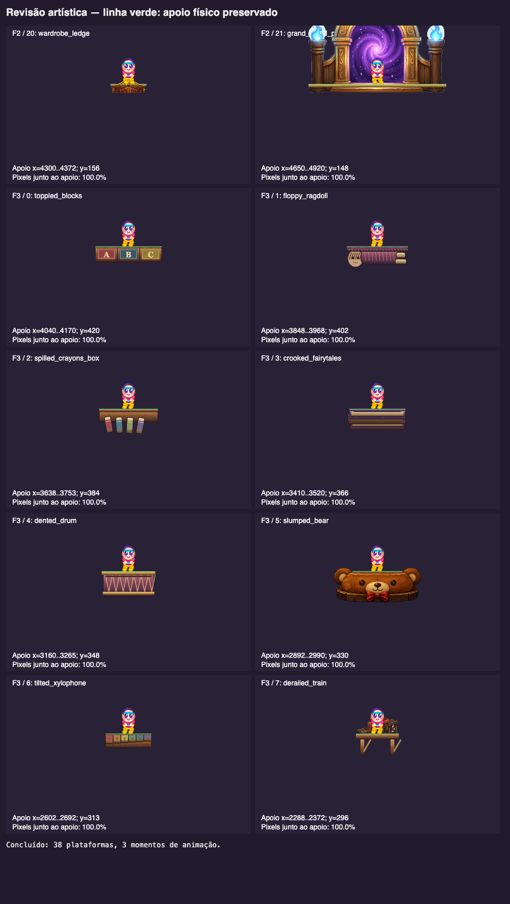
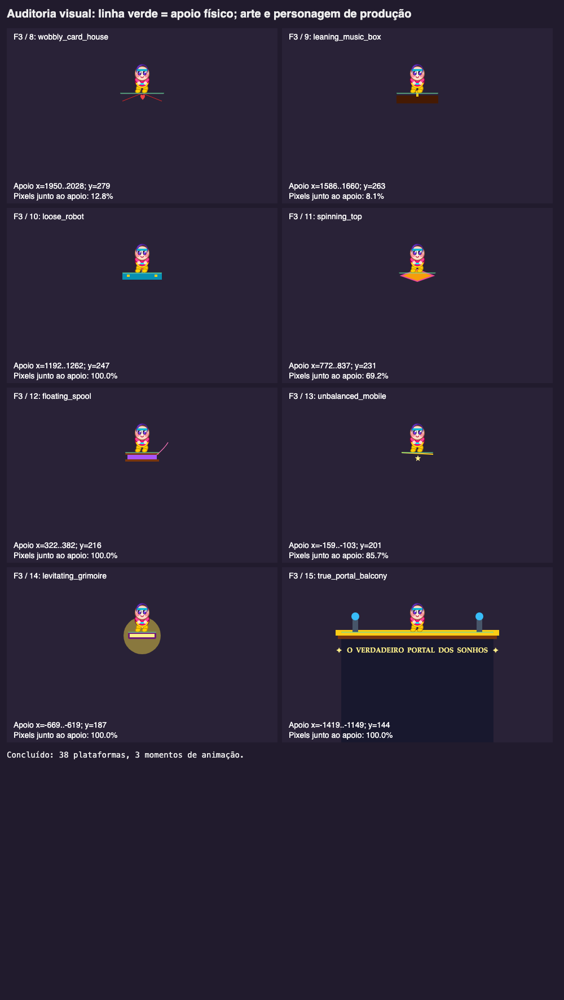
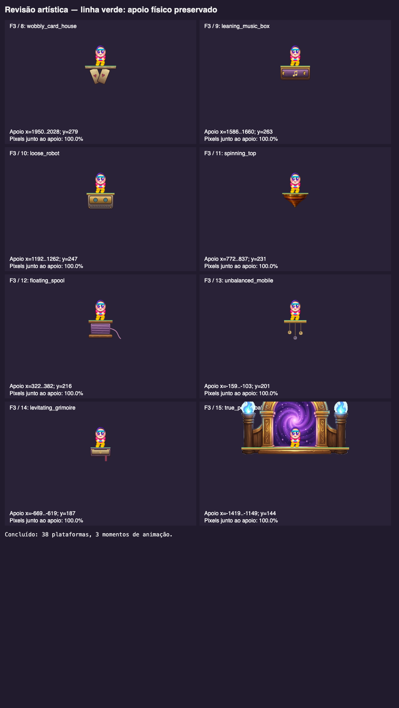

Antes

Atualizado

114 transições validadas. Física, hitboxes e dificuldade preservadas. Tolerância corporal de borda anterior permanece.







| Fase / índice | Objeto | Atualização |
|---|---|---|
| 1 / 0 | giant_bear | Mantido: urso ilustrado recente. |
| 1 / 1 | open_books | Borda de papel nivelada com páginas texturizadas. |
| 1 / 2 | vanity_table | Mantido: tampo e acessórios ilustrados recentes. |
| 1 / 3 | small_dresser | Acabamento de madeira no plano do tampo. |
| 1 / 4 | messy_blocks | Face de apoio do bloco A nivelada nos 50 px existentes. |
| 1 / 5 | toy_drum | Mantido: aro e tambor ilustrado. |
| 1 / 6 | satin_cushion | Mantido: veludo recente e apoio revalidado. |
| 1 / 7 | stepped_dresser | Acabamento do tampo alinhado a toda a largura física. |
| 1 / 8 | music_box | Mantido: caixa, bailarina e vidro recentes. |
| 1 / 9 | block_castle | Novo PNG de cantaria ilustrada e bandeira; torre central mantém apoio de 28 px. |
| 2 / 10 | train_trestle | Trem atrás de tampo contínuo; detalhes da mesa nova preservados. |
| 2 / 11 | wall_shelf | Prateleira com frente contínua e suportes abaixo dos brinquedos. |
| 2 / 12 | mushroom_lamp | Abajur atrás de prateleira de madeira, com suportes abaixo. |
| 2 / 13 | dollhouse_roof | Fachada detalhada da revisão recente preservada; cumeeira revalidada. |
| 2 / 14 | spinning_globe | Travessa ligada a uma armação de latão. |
| 2 / 15 | kite_frame | Travessa ligada à pipa por amarrações. |
| 2 / 16 | floating_books | Livro remodelado com capa, páginas, lombada e marcador, sem apoio no vazio. |
| 2 / 17 | chandelier_crystals | Aro alinhado aos pés; velas atrás e cristais abaixo. |
| 2 / 18 | curtain_rod | Varão de latão nivelado. |
| 2 / 19 | cuckoo_clock | Apoio de madeira com suportes ligados ao corpo do relógio. |
| 2 / 20 | wardrobe_ledge | Mantido: beiral recente. |
| 2 / 21 | grand_portal_pedestal | Pedestal alinhado aos pés, arco acima e recorte vizinho removido. |
| 3 / 0 | toppled_blocks | Blocos com pintura gasta, letras, madeira e faces niveladas. |
| 3 / 1 | floppy_ragdoll | Boneca com rosto, lã, tecido sombreado e costuras; vestido dobrado como apoio. |
| 3 / 2 | spilled_crayons_box | Caixa de madeira com giz revestido em papel e sombreado. |
| 3 / 3 | crooked_fairytales | Capas, páginas, cantoneiras e topo contínuo. |
| 3 / 4 | dented_drum | Corpo, cordas e aros de latão texturizados. |
| 3 / 5 | slumped_bear | Urso ilustrado oficial reaproveitado na escala local. |
| 3 / 6 | tilted_xylophone | Lâminas envelhecidas, fixações e base de madeira contínua. |
| 3 / 7 | derailed_train | Trem ilustrado sobre pequeno estrado. |
| 3 / 8 | wobbly_card_house | Cartas com volume e teto de carta horizontal. |
| 3 / 9 | leaning_music_box | Caixa com painel, ornamentos dourados e tampa nivelada. |
| 3 / 10 | loose_robot | Metal envelhecido, olhos de vidro, rebites e topo plano. |
| 3 / 11 | spinning_top | Novo PNG de madeira e latão com topo adaptado à hitbox. |
| 3 / 12 | floating_spool | Madeira, fio texturizado e fita abaixo da tampa estável. |
| 3 / 13 | unbalanced_mobile | Travessa estável com ornamentos animados abaixo. |
| 3 / 14 | levitating_grimoire | Capa, páginas, marcador e cantoneiras; somente o brilho oscila. |
| 3 / 15 | true_portal_balcony | Portal ilustrado substitui retângulos antigos; pedestal no apoio existente. |